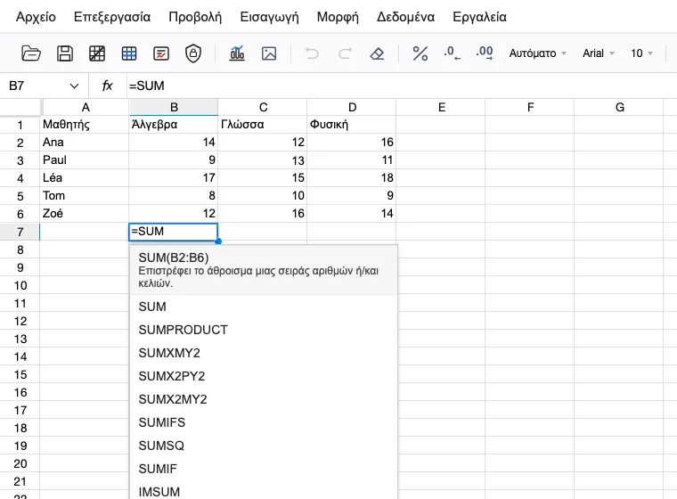
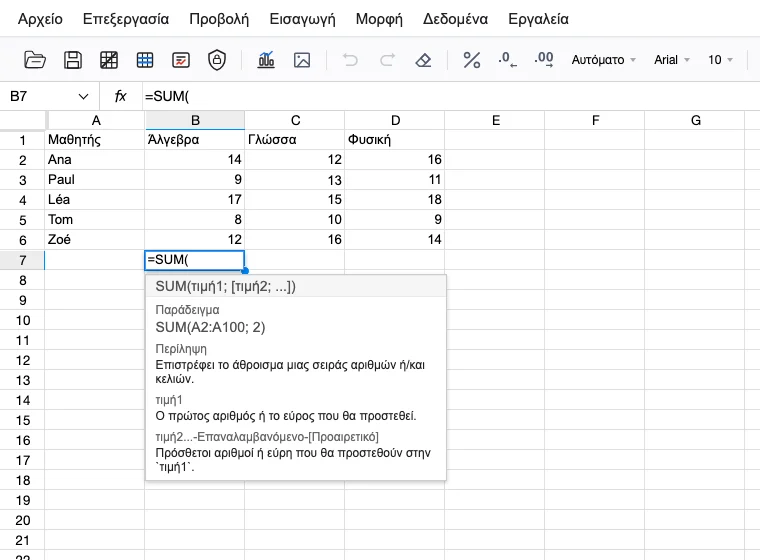
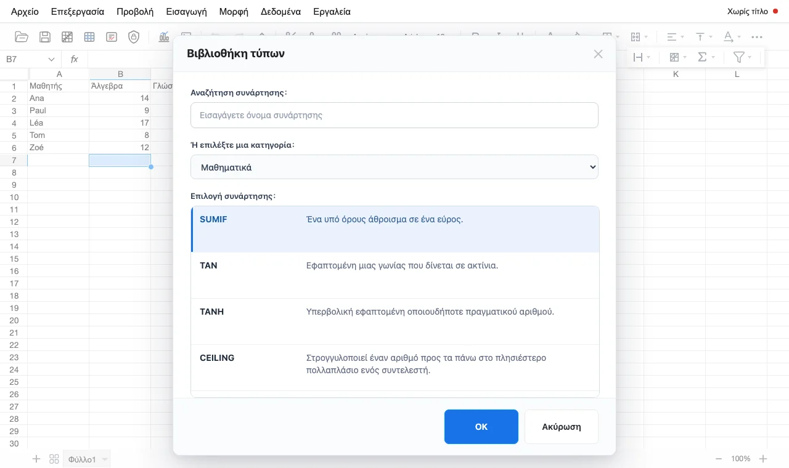

Τύποι
Γραφή τύπου
Ένας τύπος αρχίζει με =. Περιέχει αριθμούς, κείμενα σε εισαγωγικά, αναφορές σε κελιά, τελεστές και συναρτήσεις.
=B2*2
=(B2+C2+D2)/3
=AVERAGE(B2:B6)
="Σύνολο: "&SUM(B2:B6)Το κελί δείχνει το αποτέλεσμα, η γραμμή τύπων τον τύπο. Τα κελιά που εξαρτώνται από ένα αλλαγμένο κελί υπολογίζονται αμέσως ξανά.
Στα ελληνικά, το κόμμα είναι δεκαδικό και το σύμβολο ; χωρίζει τα ορίσματα: =ROUND(3,14159; 2). Τα ονόματα συναρτήσεων γράφονται με πεζά ή κεφαλαία: τα =sum(B2:B6) και =SUM(B2:B6) είναι δεκτά.
Υπόδειξη κελιών με το ποντίκι
Όσο γράφετε έναν τύπο, κλικ σε κελί του φύλλου εισάγει τη διεύθυνσή του, σύρσιμο εισάγει την περιοχή. Κάθε αναφορά έχει το χρώμα της, στον τύπο και στο φύλλο.
Αυτόματη συμπλήρωση
Από τα πρώτα γράμματα ενός ονόματος, το DocCells προτείνει τις συναρτήσεις που τα περιέχουν: ↑ ↓ για περιήγηση, Enter, Tab ή κλικ για επιλογή. Μετά την ανοιχτή παρένθεση, μια βοήθεια θυμίζει τα ορίσματα.


Αυτόματο άθροισμα
Το γράφει ένα άθροισμα. Το βέλος του προτείνει Άθροισμα, Μέσος όρος, Πλήθος, Μέγιστο, Ελάχιστο και Όλοι οι τύποι: τη βιβλιοθήκη, όπου αναζητάτε συνάρτηση με το όνομα, την περιγραφή ή την κατηγορία της.

Τελεστές
| Τελεστής | Ρόλος |
|---|---|
+ - * / | τέσσερις πράξεις |
^ | δύναμη: =2^10 |
% | ποσοστό: =20%*B2 |
& | ενώνει κείμενα: =A2&" "&B2 |
= <> | ίσο, διάφορο |
< > <= >= | συγκρίσεις |
( ) | προτεραιότητα |
Οι δυνάμεις προηγούνται από γινόμενα και πηλίκα, έπειτα τα αθροίσματα και οι συγκρίσεις. Το =-2^2 δίνει −4 (4 στο Excel).
Αναφορές
| Γραφή | Σημαίνει |
|---|---|
B2 | ένα κελί· ακολουθεί τη συμπλήρωση |
$B$2 | το ίδιο κελί, και στη συμπλήρωση |
B$2, $B2 | σταθερή γραμμή, σταθερή στήλη |
B2:D6 | μια περιοχή |
B:B, 2:2 | ολόκληρη στήλη, ολόκληρη γραμμή |
Φύλλο2!B2, 'Βαθμοί 2'!B2 | ένα κελί άλλου φύλλου |
βαθμοί | μια ονομασμένη περιοχή |
Συμπληρωμένο προς τα κάτω, το =B2*$B$1 γίνεται =B3*$B$1, =B4*$B$1…
Συνθήκες
=IF(B2>=10; "πέρασε"; "κόπηκε")
=IF(AND(B2>=10; C2>=10); "ναι"; "όχι")
=SWITCH(A2; "a"; 1; "b"; 2; 0)
=COUNTIF(B2:B6; ">10")
=SUMIF(A2:A6; "Ana"; B2:B6)
=AVERAGEIF(B2:B6; "<10")- Οι λογικές τιμές γράφονται
TRUE()καιFALSE(), με τις παρενθέσεις. Εμφανίζονται ως TRUE και FALSE. - Ένα κριτήριο είναι κείμενο:
">10","<>0","Ana". Οι χαρακτήρες μπαλαντέρ*και?δεν αναγνωρίζονται. - Ένα κενό κελί ελέγχεται με
=B2=""· δεν είναι ίσο με 0.
Αναζήτηση σε πίνακα
=VLOOKUP("Léa"; A2:D6; 3; 0)
=INDEX(A2:A6; MATCH(MAX(B2:B6); B2:B6; 0))Ο πρώτος ψάχνει τη Léa στην πρώτη στήλη του πίνακα και επιστρέφει την τρίτη· το τελευταίο όρισμα 0 ζητά την ακριβή τιμή. Ο δεύτερος δίνει το όνομα όποιου έχει τον καλύτερο βαθμό.
Ημερομηνίες και ώρες
Μια ημερομηνία είναι αριθμός ημερών, μια ώρα κλάσμα ημέρας: σε κελιά, προστίθενται και αφαιρούνται.
=A2+7
=A3-A2
=DAYS(A3; A2)
=WEEKDAY(A2; 2)Μια ημερομηνία από DATE ή TODAY πρέπει να περάσει από κελί για να προστεθεί κάτι: το =TODAY()+1 δίνει #VALUE!, αλλά αν το A1 περιέχει =TODAY(), το =A1+1 δίνει την αυριανή. Το αποτέλεσμα είναι αριθμός: δώστε του μορφή Ημερομηνία.
Σφάλματα
| Εμφανίζεται | Αιτία |
|---|---|
#NAME? | άγνωστο όνομα: τυπογραφικό λάθος, συνάρτηση που δεν υπολογίζεται, TRUE χωρίς παρενθέσεις, κείμενο χωρίς εισαγωγικά |
#VALUE! | απρόσμενος τύπος: κείμενο όπου χρειάζεται αριθμός |
DIV/0 | διαίρεση με το μηδέν ή με κενό κελί |
#N/A | η τιμή δεν βρέθηκε (MATCH, VLOOKUP), ή GEO εκτός DocGeo |
#REF! | κελί ή φύλλο που δεν υπάρχει |
#NUM! | αριθμός εκτός πεδίου ορισμού: =SQRT(-1) |
#ERROR! | κακογραμμένος τύπος, ή συνάρτηση που δεν υπολογίζεται |
Η IFERROR αντικαθιστά το σφάλμα μιας συνάρτησης (#N/A, #NUM!): =IFERROR(VLOOKUP(E1; A2:D6; 2; 0); "απών"). Δεν αντικαθιστά το σφάλμα μιας πράξης (DIV/0, #VALUE!): για τη διαίρεση με το μηδέν ελέγξτε τον διαιρέτη, =IF(B2; B3/B2; ""), που ισχύει για μηδέν και για κενό κελί.